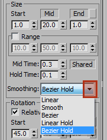

Appendix: Particle Smoothing Interpolation
Overview
SC2Particles have multiple ways to blend values between the three particle life keys, Start Mid and End. Inside the Per-particle Parameters for Color, Size and Rotation there is a pulldown for Smoothing. For each type of smoothing is shown an example of particle scale with these values: Start = 1, Mid = 20, End = 1, Mid Time: = 0.3, Hold Time: = 0.1
Linear has the most basic of linear blending between the Start, Mid and End values over the particle life.
Smooth is a simple curve with parallel control points. Creates an ease in/out type curve.
Bezier is a simple single segment bezier curve with equal length in and out control points. The Mid point defines the size of the curve, but it doesn't allow a lopsided or weighted curve. To achieve lopsided bezier smoothing use Bezier Hold with 0 hold time.
Linear Hold adds the ability to have a Hold Time which causes the particle property to linear blend fully to the Mid value of the particle an amount of particle life before and after the Mid Time.
Bezier Hold creates two separate bezier curves before and after the Mid Time as well as having a Hold Time before and after the Mid Time.